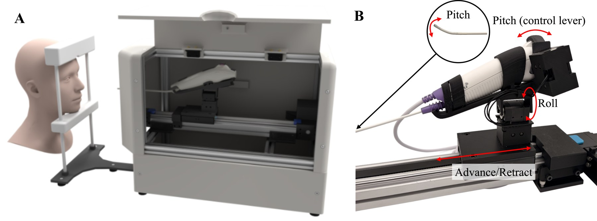

Autonomous Robotic Laryngoscopy
A robot that steers a flexible endoscope through the nose to a diagnostic view of the vocal cords, so a specialist can review the exam from anywhere.
My part: I specified, designed, built and tested the robot, and wrote the generative control policies.
Highlights:
1st place, Lowell Milken Institute–Sandler Prize for New Entrepreneurs, 2026
1st place, Knapp Venture Competition, 2026
3rd place, Cross Campus Innovation Challenge, 2026
Why it matters
Roughly 30 million people in the U.S. experience a voice disorder each year. The standard exam, diagnostic flexible laryngoscopy, passes a thin camera through the nose to look at the vocal cords, and it requires an otolaryngologist in the room. Specialists are scarce outside major cities, so rural patients face long trips and delayed diagnoses, including of laryngeal cancer.
Our idea is to separate acquiring the video from interpreting it: a robot safely captures the exam on site, and a specialist reviews it remotely, much like echocardiograms are recorded by technicians and read by cardiologists.
The system
The platform drives a commercial single-use flexible endoscope through three degrees of freedom: advance/retract along the scope, roll about its axis, and tip deflection through the scope’s own control lever. Every axis has physical and software stops plus velocity limits drawn from expert demonstration videos.
Two ways to steer
The first is an interpretable vision pipeline: an onboard edge computer runs a lightweight convolutional network on the live video to segment the open airway, recognize where the scope is (nasal cavity, velum, epiglottis, larynx), and track the glottis once it is in view.
The second is a diffusion policy trained on expert demonstrations collected in 11 cadavers. Learning directly from how experts drive the scope can capture nuanced movements that rigid rules miss, like recovering when secretions blur the view.
We have characterized contact forces and durability on the bench and evaluated autonomous navigation in a cadaveric feasibility study.
